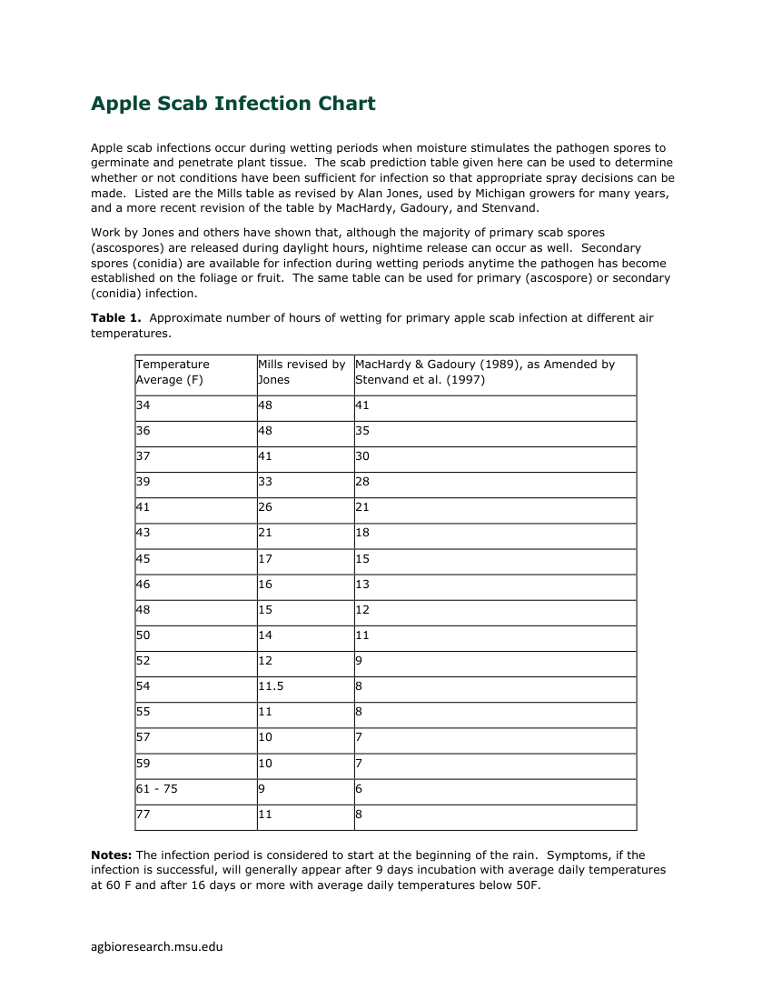

{{millsChip}}
SCAB_MG_STENSVAND · versiya 1.0 · Michigan Universiteti · 11.11.2026
Qara ləkə cədvəli — Michigan (MacHardy–Gadoury, sərt)
Hər sətri soldakı orijinal mənbə ilə yoxlayın. Təsdiqdən sonra qayda AKTİV olur və qara ləkə yalnız bu cədvəllə hesablanır. Kitabın köhnə cədvəli (Cədvəl 45.1) köhnəlmiş sayılır.
[ELMİ] MSU — Apple Scab Infection Chart, Table 1 · kitab Fəsil 45.3 [S467]

Çıxarılmış cədvəl
{{checked}} / {{total}} sətir yoxlanıb| °F (MƏNBƏ) | °C | SƏRT, SAAT | MILLS (JONES) | YOXLANDI |
|---|---|---|---|---|
| {{r.f}} | {{r.t}} | {{r.h}} | {{r.d}} |
Qaydanın məlumatları
Versiya: MacHardy və Gadoury (1989), Stensvand və həmk. (1997) düzəlişi ilə — askospor üçün Mills-dən ~3 saat az
Mənbə: Michigan Dövlət Universiteti, Apple Scab Infection Chart (2003); MacHardy & Gadoury 1989, Phytopathology 79:304 — hər ikisi oxunub
Temperatur: islanma dövründə orta hava temperaturu; infeksiya yağışın başlanğıcından sayılır; askospor və konidi üçün eyni cədvəl
Diapazondan kənar: < 1,1 °C və > 25 °C → məlumat kifayət deyil
Qeyd: cədvəldə orta/ağır dərəcə sütunları yoxdur. Ləkələr ~15,6 °C-də ~9 gün, 10 °C-dən aşağı 16+ gün sonra görünür (MSU).
Təsdiq düyməsi bütün sətirlər yoxlananda aktivləşir. Kim və nə vaxt təsdiqlədiyi audit jurnalına yazılır.
{{wetChip}}WET_RH_EST · versiya 0.1 · sensor olmadıqda lazımdır
Yarpaq islanmasının təxmini (sensorsuz)
Qayda: saatda yağış > 0 mm və ya nisbi rütubət ≥ 90% olarsa, saat islaq sayılır. İslanma epizodu yağışla (≥ 0,25 mm) başlayır.
Mənbə: Sentelhas və həmk. (2008), Agricultural and Forest Meteorology, DOI 10.1016/j.agrformet.2007.09.011 — nisbi rütubətin yarpaq islanmasının təxmini kimi yararlılığı. Kitab, Fəsil 45.3: islanma yağışın başlanğıcından sayılır; askosporlar ≥ 0,25 mm yağışla buraxılır.
Diqqət: məqalənin tam mətni oxunmayıb — 90% həddi təsdiqdən əvvəl tam mətnlə yoxlanmalıdır. Nəticə həmişə TƏXMİNİ-dir və KRİTİK səviyyəyə çatmır. Bu qayda təsdiqlənməyincə qara ləkə hesabı "məlumat kifayət deyil" göstərir.
{{liveNote}}